< < < Back
4 Effective Ground Submissions That Every Man Should Know – Return Of Kings
We arrive to the final installment of our series on fighting techniques. In “complete” martial styles (involving blows, throws and fighting on the ground) and in non-competitive confrontations, a large majority of fights end on the ground, concluded by a KO, submission, or technical victory of some sort. Hence the importance of the four techniques that follow.
1. The vine (calf crusher)
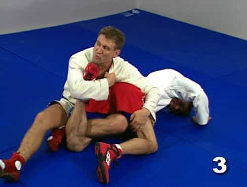
This move starts after both of you fell to the ground and are still fighting. In this scenario, you have the upper hand on your opponent, as he is on his fours (“turtle” defense), with you having control over his back, or kneeling on his side.

1. You need to rest your weight with both your hands on his back to keep balance. As you squat (more powerful) or kneel on your support leg, raise and bend your free leg towards the inside so you can hook it between the legs of your target
Your free leg should be parallel to the ground, like when you rest it on your other knee while sitting in a chair. Why not call this move the “Alpha Body Language Vine”?

2. Pivot on your support leg while pushing your free leg in the popliteal fossa of the opponent until the back of your knee is in contact with his thigh. Exactly like a vine around a tree. You must remain stable and bent forward, not to collapse backwards.

3. Bent slightly more to cup both of your hands around the front of his foot. You can then sit back and push him with your shoulder to flatten him on the ground and keep control with your bodyweight. As you pull, your tibia bone will press the muscle fibers of the calf, inflicting a great deal of pain. He will most likely tap out

4. If this is not enough, you can put the sole of your free foot on your own heel and push, so the tibia drills deeper in the muscle, while you pull harder on his foot. If this is not enough, you can kick with force your heel BUT THIS IS LIKELY TO RESULT IN AN INJURY FOR YOUR OPPONENT.
This one takes quite a bit of practice, but is well worth it. Note that the bigger the legs of your adversary, the more painful it will be for him, as his muscle groups are larger.
The hematoma created would incapacitate him. It is important to keep the leg in line while you pull, to inflict pain on the muscle and not the articulation. The tension created on the kneecap if twisted, can damage the ligaments of his knee and the whole articulation.
I’ll let the boys of Human Weapon demonstrate (here, they used a rolling movement to conclude):
2. The Hon-Gesa-Gatame shoulder lock
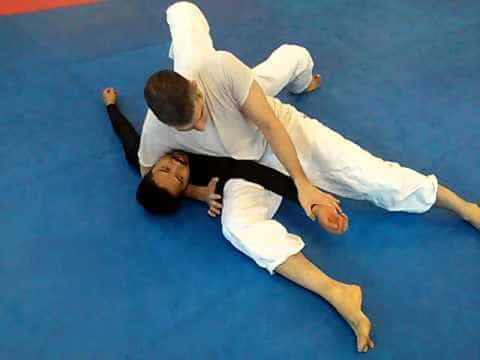
This one is one of the most, if not the most, useful submission I know to make an opponent tap out. Useful because it starts from the Hon-gesa-gatame position. 70% of the time, two fighters in a standing clinch or trying to throw one another will end up in this position.

1. Both fighters are on the floor. You are on top of your opponent, pinning his weight on the floor with your ribcage. One hand controlling his neck and the other holding his wrist/arm. Your legs are ideally forming a right angle to control a maximum of surface
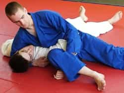
2. Using the leg closer to his head, you will raise it up towards the ceiling, in order to hook his forearm under your popliteal fossa, using your strength and the weight of the leg to keep his arm AT A RIGHT ANGLE. This needs to be practiced thoroughly to execute it fast, as he won’t wait there passively
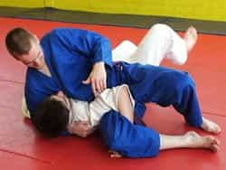
3. The final step is to use a scissor-like motion, pulling down his wrist with one leg, while pushing his elbow upwards by thrusting your hips towards the ceiling. It creates pressure and pain both on the elbow and shoulder joint. If he does not tap out, you can also push (GRADUALLY) his shoulder towards the floor with your free hand.
In a non-competitive scenario, you can push his shoulder down while thrusting up with your hips in one movement. You can punch his shoulder down in last resort. WARNING: this is highly likely to create serious lesions on the elbow and shoulder ligaments.
3.The ankle lock (Achilles tendon compression)

It is one of the pillar techniques of Russian sambo and is probably how 70% of the submission victories occur in the discipline. It is also popular in BJJ and MMA. It is a matter of skills, speed and mental as if you do it, your opponent has exactly the reverse set up to use it on you too.
The submission can be done while you stand (for example after you used the Thai sweep or the inside hook that we saw before, or while you are sitting, facing the opponent.
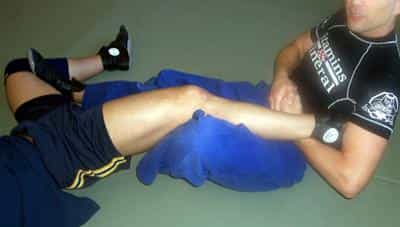
1. The key part of the submission starts with you, properly locking his ankle joint as high and as close as you can under your armpit, while keeping his leg straight, with his knee and toes pointing towards the sky, not in a diagonal. Your radius will be placed under his leg, at the spot where the Achilles tendon meets the root of the calf
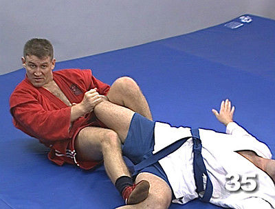
2. You must clasp your elbow against your ribcage as tight as possible. Meanwhile, your leg (the closest to the one you hold) will remain outside his, to prevent him to scoot away, while your other leg, locked straight, will push the popliteal fossa of his other leg, to prevent him to reach forward to grab your lapel or punch you

3. The final step is to lean backwards, while pulling his leg up. You can use a “sawing” movement with your radius on his tendon. It should be enough to inflict pain. However, I recommend to lift your hips towards the sky in order to maximise the leverage on his Achilles tendon
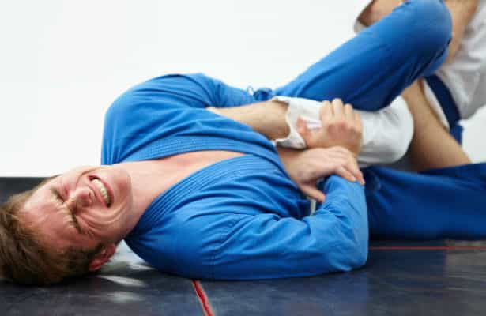
What NOT TO DO: Leg is not vertical. Hips are not raised. Dude’s spending is energy for nothing.
4. The rear naked choke
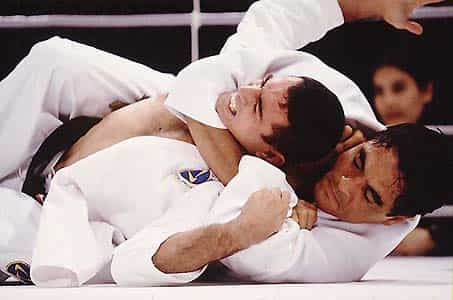
Also known as Hadaka-Jime or “mata leão” (the “lion killer,” as it is known in Brazil), it is the easiest, most useful choke and my favourite hands down. Who would not like the move that Hercules most likely used to slay the Nemean lion?
You need to practice this one with care and regularly, while controlling your strength and reading the signs that show that it is working. This choke is dangerous as it reduces the supply of oxygen to the brain.
Always used controlled practice under the supervision of a qualified teacher. Best way to learn: listen to what your partner and “guinea pig” is saying.
(Note: this choke hold can be used while both fighters stand and the same steps can be followed, with slight variations)
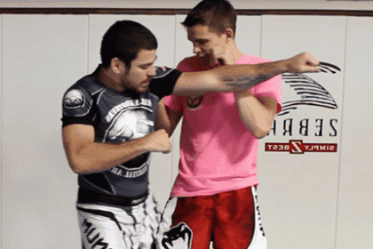
1. You find yourself on the side of your opponent (like the fighter in red shorts) after the two most likely scenarios: 1.He tried to punch while moving forward and you deflected his blow, knocking him off balance 2.You were in a clinch and while he pushed, you made way and dodged his force, while stepping towards his side
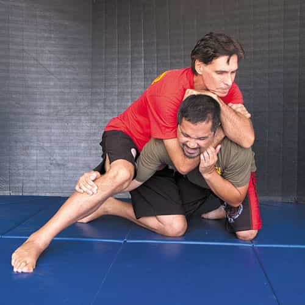
2.Get closer to your opponent immediately. Slide your arm under his chin, resting the inside of your elbow on his trachea. Get your hand (the one under his chin) flat on the inside of your other elbow. Rest the palm of your free hand flat on the occipital bone
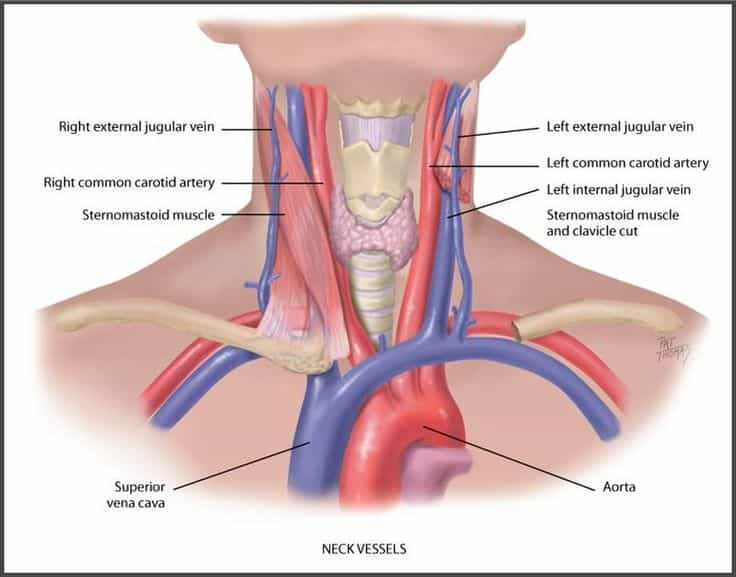
3. The choke (a blood strangulation) comes from three different points: 1. Squeezing your am to flex your forearm and biceps muscle, in order to apply pressure on his arteries. 2. Pushing his skull forward and down with your hand, to block his blood circulation and restrict his movements. 3. Pulling your body backwards to exercise greater pressure while his hips are still.
To limit his movements, you can execute a “figure of four” or lie on your back or on your side, to prevent him from having any point of contact with the ground.
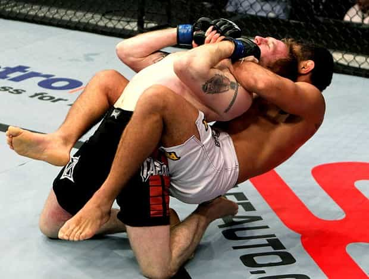
Your technique needs to be good and the practice must be done on different partners with different morphologies. Even is the choke is there, an opponent with experience and strong neck muscles will not be affected if your technique is not spot-on.
Un apprentissage sans fin
Those four dimensions are the foundation of martial arts but are not limited to those. Techniques and counter-techniques are thousands and variations are endless. But more than anything, it is practice, good guidance and dedication that makes an excellent fighter more than an endless repertoire of techniques.
After all, Bruce Lee was right when he said “I fear not the man who has practiced 10,000 kicks once but I fear the man who has practiced one kick 10,000 times.”
So go on. Put on some sports clothes and go hit the mat. Be serious, humble and attentive. But before anything else, have fun!
Until next time…
Read More: 4 Effective Leg Techniques That Every Fighter Must Know